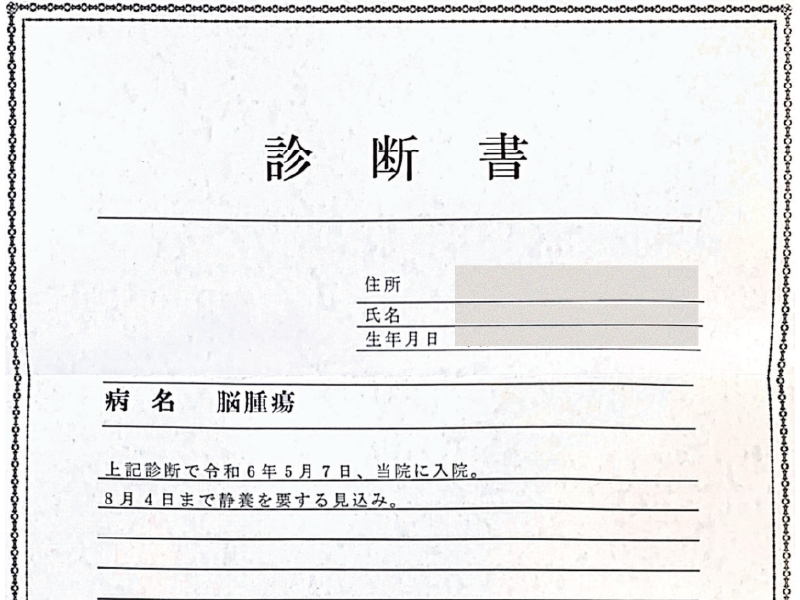

一時退院

十日ほど入院して一時帰宅が決まりました。最初に入院した病院は手術の設備や環境が整っておらず、もっと大きな都内の病院での手術をお医者様に勧められたからでした。両親が腕の良いドクターを探してくれ、転院の手続きもしてくれ、おんぶに抱っこ状態。でも、ありがたかったです。
退院の日、母が車で迎えに来てくれ、診断書を見せてもらい「脳腫瘍」の3文字。私は「なんかカッコいいね」などと言った気がします。お医者様は脳腫瘍の中でもきっとこれだろうと目星をつけてくれており、結果的にドンピシャでそれだったので、どちらの病院でも良い先生に恵まれたことが幸運だったと思います。
転院先の病室が空くまでは薬を飲みながら実家で好きなように過ごしました。愛犬といちゃいちゃして、ピクニックや外食も楽しみましたが、自分の声に反応してくれる相手がいることが大きな喜びでした。あらためて考えても、入院生活は寂しいものです。